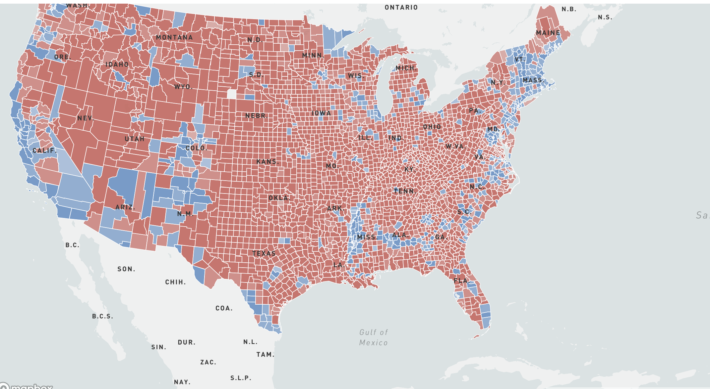

My name is Richard A. Abbey, a Ghanaian award-winning business journalist and an Msc Data Journalism candidate
at
Columbia University’s Graduate School of Journalism. In the last ten years, I have worked as a journalist rising to the position of Managing Editor in my
last role at
My name is Richard A. Abbey, a Ghanaian award-winning business journalist and an Msc Data Journalism candidate
at
Columbia University’s Graduate School of Journalism. In the last ten years, I have worked as a journalist rising to the position of Managing Editor in my
last role at Below are some of my works

Race to the White House: Recreating the map of the US 2020 elections results
This project contains maps that detail how the Democrats swept through the country to win the race to the White House in the keenly contested US Presidential elections in 2020.
Tools used: mapbox, javascript, pandas, geojson